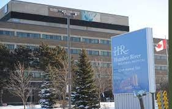

All About Me!
By Roha Noor
This is all you could know about me, written by me!
Where it started
It began in Etobicoke, Ontario. Specifically Humber River Hospital

I was born March 30th, 2006 to possibly the best parents I could imagine, along with that two older sisters who I wouldn't trade for the world.
For the next four years of my life I would be at home doing all possible to occupy myself and kill my boredom. That included wasting hours watching dora the explorer, as any child was doing at the time, and practcing my handwriting (as per my mothers request).
Some of my favourite activities as a child included:
- Play-doh
- Watching TV
- Annoying my family
School Years
In 2010 I joined kindergarten class, which was a wonderful time for me. I went to Beaumonde Heights Junior Middle School, and continued there for all of elementary and middle school. It is there where I made most of my accomplishments